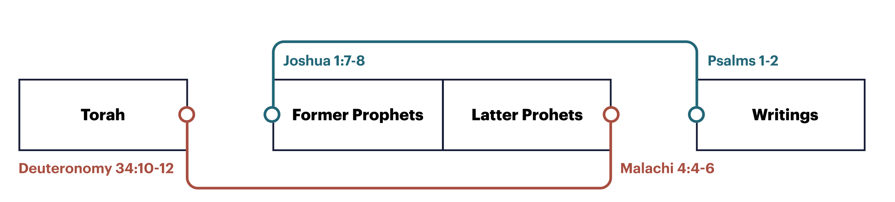

Sessão 4: Costuras Entre Textos nos Manuscritos do Mar MortoSession 4: Seams Between Texts in the Dead Sea Scrolls
Principais LiçõesKey Takeaways
Os Manuscritos do Mar Morto preservam a tecnologia de fabricação de rolos durante o período pré-cristão, revelando como a Bíblia Hebraica teria se parecido na sinagoga de Jesus.The Dead Sea Scrolls preserve the technology of scroll making during the pre-Christian period, revealing what the Hebrew Bible would have looked like in Jesus’ synagogue.
Dentro da tecnologia específica da época, o começo e o fim de um rolo são dois dos lugares mais prováveis onde podemos procurar por pistas intencionais e hiperlinks.Within the specific technology of the time, the beginning and end of a scroll are two of the most likely places we can look to find intentional clues and hyperlinks.
O Design Editorial do TaNaKThe Editorial Design of the TaNaK
A forma em três partes da Bíblia Hebraica não é simplesmente uma questão de organização. Em vez disso, os próprios livros foram projetados para se encaixar nessa forma particular. Se você olhar para as costuras editoriais das seções principais (lembre-se, a tecnologia era de papiro ou rolos de couro), você encontrará pistas de design intencionais no começo e no fim dessas seções.The three-part shape of the Hebrew Bible isn’t simply a matter of arrangement. Rather, the books themselves have been designed to fit into this particular shape. If you look at the editorial seams of the major sections (remember, the technology was papyrus or leather scrolls), you’ll find intentional design clues at the beginning and ending of these sections.

Tanak Editorial Design. Criado por Tim Mackie para BibleProject Classroom: Adam to Noah (2020).Tanak Editorial Design. Created by Tim Mackie for BibleProject Classroom: Adam to Noah (2020).
Pergunta para ReflexãoReflection Question
Como ver a Bíblia Hebraica como uma série de rolos em vez de um livro encadernado impacta a maneira como você a compreende?How does viewing the Hebrew Bible as a series of scrolls rather than a bound book impact how you understand it?